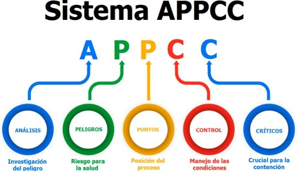
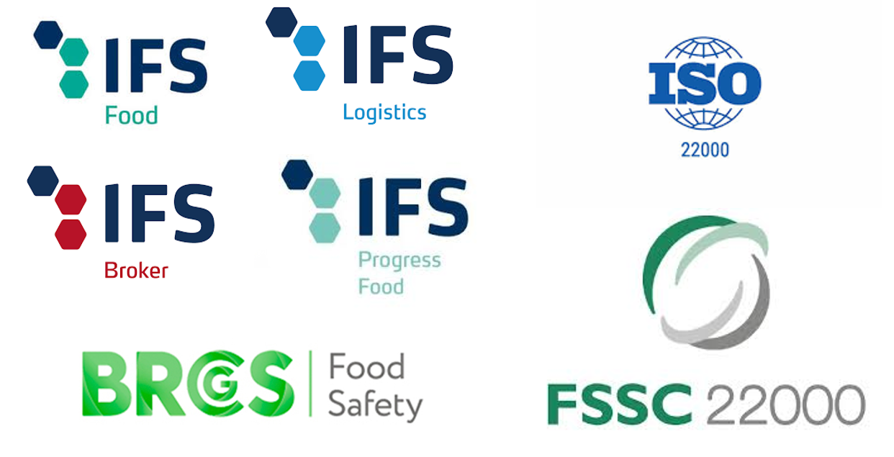
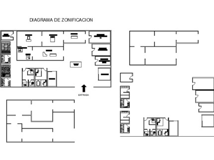

Consultoría
Asesoramiento especializado en APPCC, normas GFSI y exportación a terceros países
Sistema APPCC: implantación y mantenimiento
El APPCC es la base de cualquier sistema de seguridad alimentaria. Nuestro equipo elabora y actualiza el sistema ante cambios de legislación, procesos productivos, instalaciones o ampliación del catálogo de productos. Realizamos visitas en planta para verificar Buenas Prácticas de Manipulación (BPM) con emisión de informe, elaboramos fichas técnicas e instrucciones de trabajo, revisamos registros, análisis de laboratorio y etiquetado, y realizamos ejercicios de trazabilidad y simulacros de alertas sanitarias.
También acompañamos en inspecciones oficiales y elaboramos medidas correctoras y alegaciones ante expedientes sancionadores.


Certificación en normas GFSI: IFS, BRC, ISO 22000 y FSSC 22000
Asesoramos a los departamentos de calidad en el desarrollo documental, la implantación y el seguimiento de las normas IFS Food, IFS Logistics, IFS Broker, BRC Global Standard, ISO 22000 y FSSC 22000, según los requerimientos específicos de cada una.
Acompañamos en las auditorías de certificación, resolvemos las no conformidades detectadas y realizamos visitas periódicas de seguimiento para garantizar la continuidad del sistema en el tiempo.
Consultoría SAE: exportación a terceros países
El Sistema de Autocontrol Específico (SAE) es imprescindible para la exportación de productos de origen animal a países fuera de la Unión Europea. Ayudamos a las empresas a implantar, gestionar y mantener actualizado este sistema, realizando visitas periódicas para verificar el grado de cumplimiento e implantación de los requisitos exigidos por cada país de destino.

Asesoramiento en procesos productivos
Apoyamos a las empresas en la optimización de sus procesos productivos: desde el diseño de nuevos establecimientos hasta el diseño de estudios de vida útil y caducidad secundaria, pasando por el asesoramiento en el uso correcto de aditivos alimentarios según la normativa vigente.